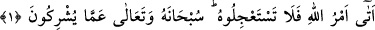
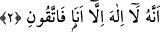

ALLAH YÜCEDİR
Rahman ve Rahîm olan Allah’ın adıyla.
1. Allah’ın emri gelmiştir. Artık onu istemekte acele etmeyin. Allah, onların
koştukları ortaklardan uzak ve yücedir.
2. Allah kendi emriyle melekleri, kullarından dilediği kimselere vahiy ile, “Benden
başka ilah olmadığına dair (kullarımı) uyarın ve benden korkun.” diye gönderir.
“Allah’ın emri gelmiştir. Artık onu istemekte acele etmeyin.” Rivâyet edildiğine
göre Kureyş kâfirleri, Nebî (a.s.) ile alay etmek ve ilâhî vaadi yalanlamak maksadıyla,
kendilerine vaâdedilen azâbın geciktiğini ileri sürüyorlar ve şöyle diyorlardı: “Eğer
azâbın gelmesi ile ilgili olarak söylediklerin doğru olsa bile putlar bizim için şefâat
eder ve bizi o azabdan kurtarır.” İşte bunun üzerine bu âyet nâzil olmuştur.
“Allah’ın emri” vaâdedilen azabdır. Çünkü o azâbın gerçekleşmesi, Allah’ın kesin
hükmüne ve takdirine bağlıdır. “Allah’ın emrinin gelmesi” ise yaklaşması
anlamındadır ki, burada gerçekleşmesi kesin olan şey gerçekleşmiş gibi ifâde edilmiştir.
Bu azâbın vukûu da Bedir savaşında olmuştur. Yâni ey kâfirler, size vaâdedilen şey
yakındır.
“Artık onu istemekte acele etmeyin.” Allah’ın emrini ve onun meydana gelmesini
istemekte acele etmeyin. Çünkü o sizin iyiliğinize değildir ve sizin için ondan kurtuluş
da yoktur. Onların azâbı istemekte acele etmeleri, her ne kadar alay için olsa da, gerçek
kabûl edilmiş ve bir tür alayla böyle yapmaları yasaklanmıştır.
“
el-İsti‘câl”, bir şeyi vakti gelmeden önce istemek demektir.
“Allah, onların koştukları ortaklardan uzak ve yücedir.” Allah, zâtı itibariyle, bir
ortağı olmaktan uzak ve yücedir, dolayısıyla da onların koştukları şirkleri bir şekilde
bertaraf eder. Burada yüce zâtı tenzih eden, bizzat o zâtın kendisi olduğu için “tenzîh”
(beri kılmak), “teberrî” (berî olmak) anlamına dönüşmüştür.
İbn Abbas (r.anhümâ) der ki: “Kıyâmet yaklaştı ve ay yarıldı.” (el-Kamer, 54/1)